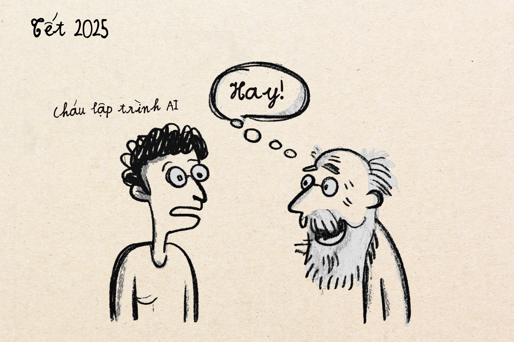
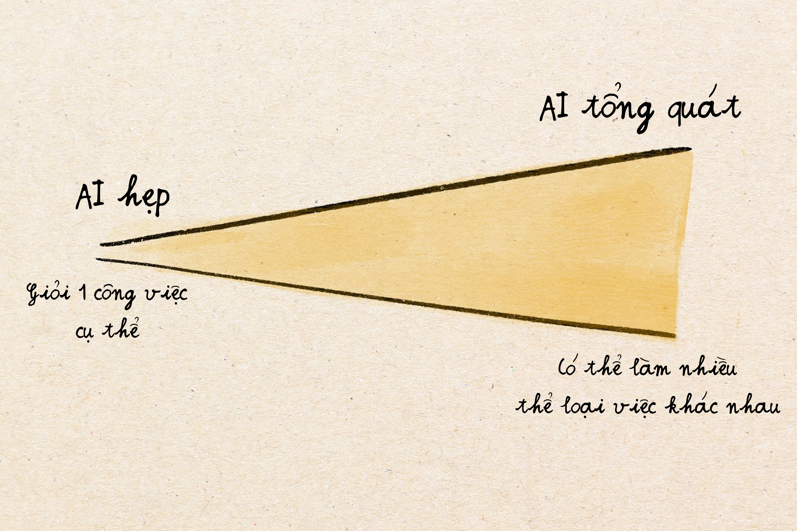
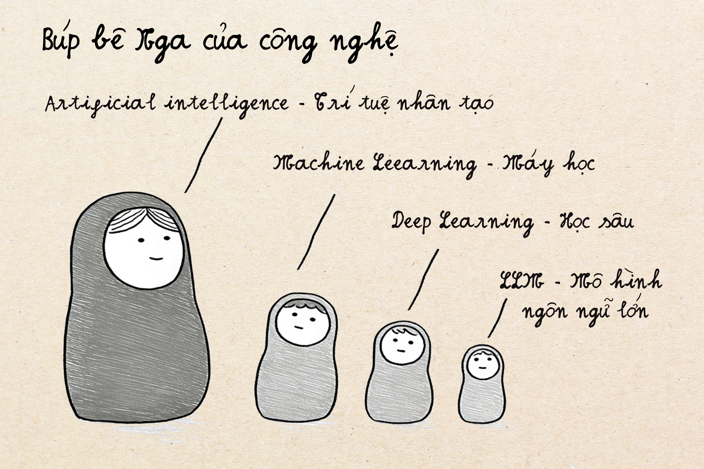
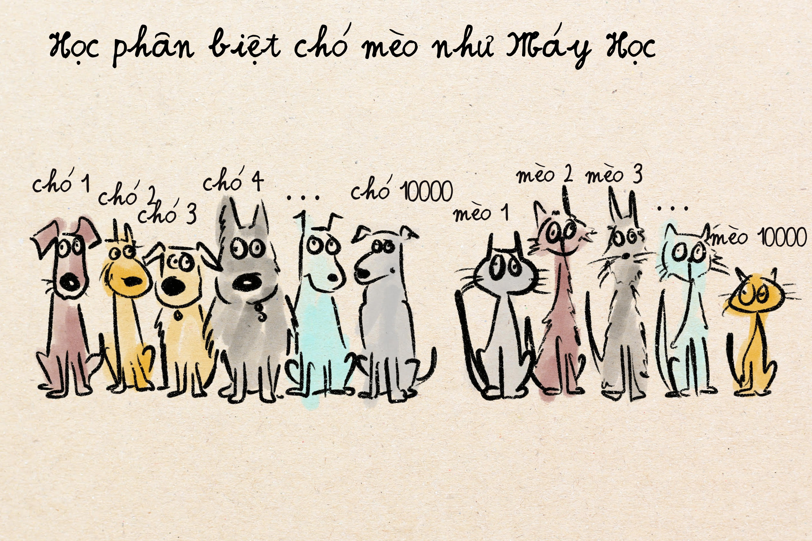
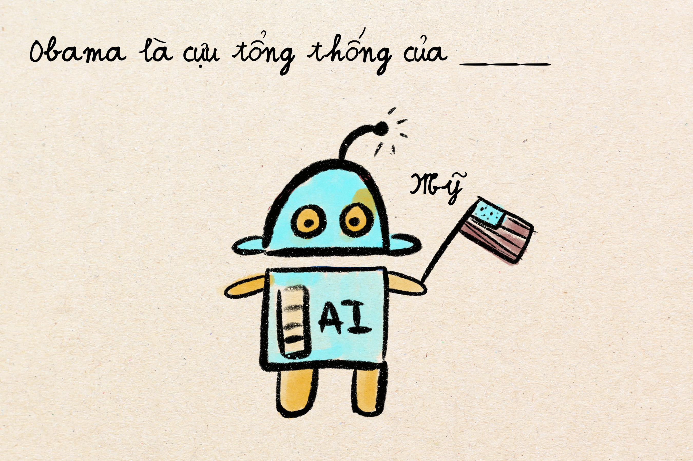
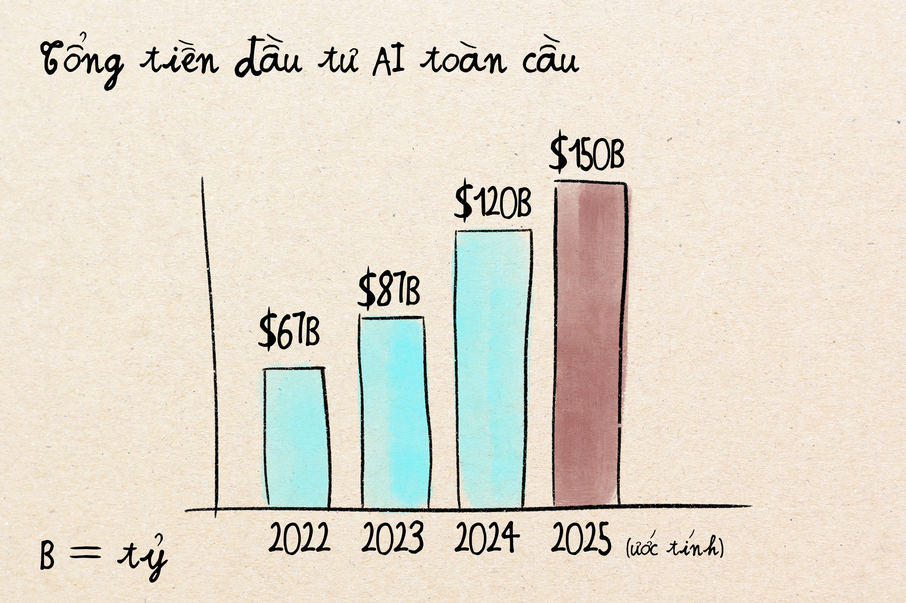
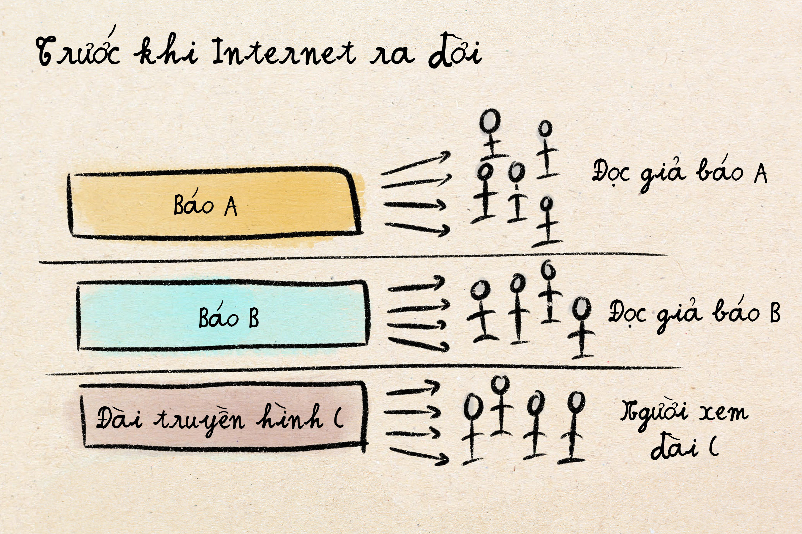
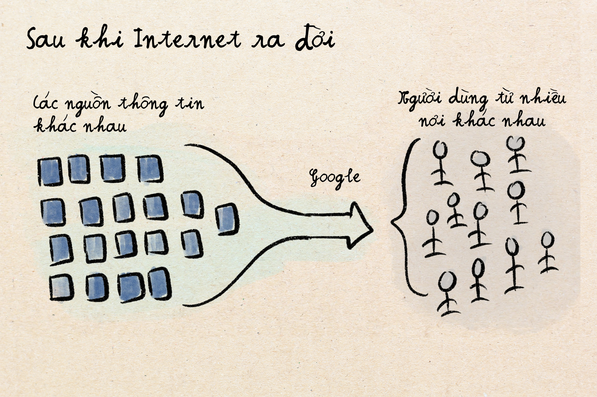
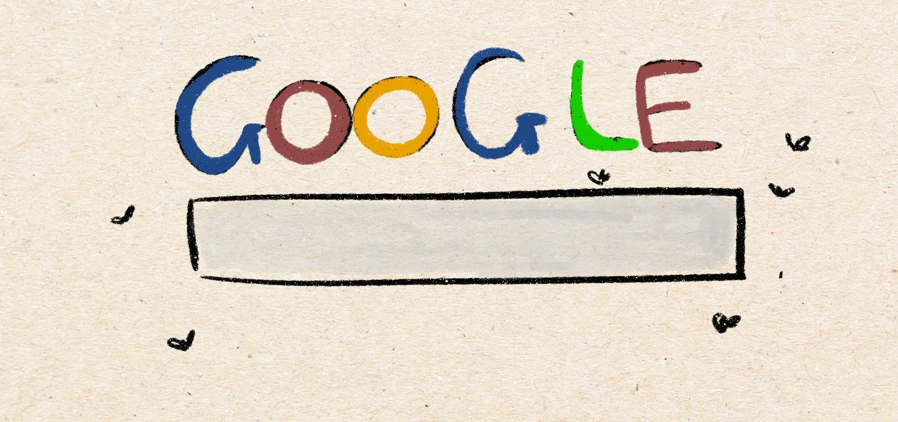
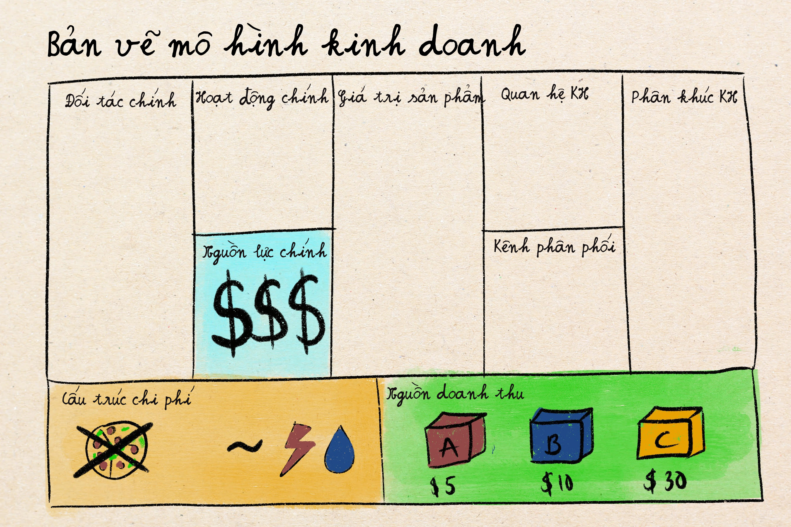

Tưởng tượng vào năm 2021, bạn về quê chơi tết. Chú bạn hỏi bạn làm nghề gì, và bạn nói:
Tết năm 2025, khả năng cao là câu trả lời sẽ hơi khác
Trong vài mùa tết từ 2021 tới nay, đột phát công nghệ xảy ra ở mức độ như thể con người khám phá ra lửa, khác cái là ngọn lửa này có thể viết email cho bạn, lập trình website cho bạn, và trả lời bất kỳ câu hỏi nào bạn có thể hỏi trên internet. Và các sự kiện diễn ra trong ngành công nghệ trong khoảng thời gian này cũng ly kỳ không kém gì phim Hàn Quốc.
Trước ngày 30 tháng 11 năm 2022, trí tuệ của AI còn khá hẹp. Nó chỉ có thể giỏi một công việc cụ thể nhưng hoàn toàn vô dụng với các công việc khác mà nó không được rèn luyện.
Ví dụ như:
AI hẹp được dùng ở khắp mọi nơi nhưng không ai quá ngạc nhiên vì độ hữu dụng của chúng.
Ngày 30 tháng 11, 2022 được ghi nhớ trong lịch sử công nghệ như ngày iPhone ra đời, hay ngày Mark Zuckerberg phát minh ra poke (chọt tay) bạn bè trên Facebook. OpenAI tung ra ChatGPT khuất động mạng internet. Nó giống như thánh gióng đang không biết nói bỗng nhiên nói chuyện như người lớn vậy. Không những thế, ChatGPT có thể làm nhiều thứ việc và trò chuyện với người dùng chứ không chỉ có chuyên sâu hạn hẹp như tất cả các AI đi trước.
Học sinh sinh viên nhanh chóng tìm cách dùng ChatGPT để làm bài trên trường. Giáo viên thì đau đầu không biết chấm điểm thể nào. Lập trình viên thì nhận ra ChatGPT lập trình giỏi hơn nhân viên cấp thấp, và tất nhiên các nhà đầu tư kinh doanh thì mắt sáng lên ký hiệu đô la.
Chỉ trong 60 ngày, ChatGPT kiếm được100 triệu người dung, nhanh nhất trong lịch sử công nghệ. Để đạt được con số này, Facebook mất tới 4,5 năm, Instagram mất 2,5 năm, và Tiktok mất 9 tháng.
"AI" là một thuật ngữ mà mọi người sử dụng nhưng không ai thực sự định nghĩa được cho chuẩn. Để dễ hiểu, ta lấy con búp bê Nga để giải thích nhé. Có nhiều loại công nghệ AI và mối quan hệ của chúng giống như những con búp bê Nga, với mỗi tầng búp bê đại điện cho một mức độ công nghệ khác nhau.
Đây là búp bê ngoài cùng, lớn và đầy tham vọng. AI về định nghĩa cơ bản là "giúp máy tính làm những việc thường yêu cầu trí tuệ con người." Định nghĩa này khá mơ hồ, nó giống như dùng từ "vận tải" để mô tả tất cả mọi thứ chuyển động từ đi bộ đến tàu vũ trụ. Về mặt kỹ thuật vẫn là đúng, nhưng không có ích trong việc sử dụng trong cuộc sống và thực hành.
Theo định nghĩa này thì AI bao gồm mọi thứ từ:
Lớp bên trong búp bê ngoài cùng, AI, là Machine Learning, tiếng Việt là máy học. Máy học là "giúp máy tính làm những việc yêu cầu trí tuệ con người, bằng cách cho máy tính xem rất rất nhiều ví dụ thay vì dạy nó quy tắc cứng nhắc."
Như nếu bạn dạy một đứa trẻ hiểu ra được con nào là chó nào là mèo:
Cách mọi người hay dùng là dạy trẻ "quy tắc cứng nhắc" như "Chó thường sủa, thường lớn hơn và có lông dài hơn mèo, thích ở gần người hơn". Còn mèo thì "hay kêu Meow, thường thích tự lập và có ria dài hơn, etc." Ngay cả những quy tắc như thế này vẫn có lúc sai. Có những con chó không thích sủa, thích tự lập, nhỏ, và lông ngắn. Cũng có những con mèo thích gần người, lông cực dài, v.v. Quy tắc cứng nhắc thường dễ có trường hợp bị sai.
Nhưng nếu áp dụng cách dạy như trong Machine Learning thì thay vì quy tắc, ta sẽ cho trẻ xem 10.000 hình ảnh được gắn nhãn "chó" và 10.000 hình ảnh được gắn nhãn "mèo". Và để cho não của trẻ tự nhận ra những điểm chung đặc trưng của chó và mèo. Cách dạy này thường dẫn tới kết quả tốt hơn, ngay cả cho những nhiệm vụ khó có thể chắt lọc thành quy tắc cứng.
Machine Learning là cách luyện máy tính để nó làm được những việc như Phát hiện thư rác, gợi ý phim trên Netflix, gợi ý sản phẩm trên Amazon, giới thiệu người mới có độ thành công cao trên ứng dụng hẹn hò, v.v.
Deep Learning là một loại Machine Learning dùng cấu trúc toàn học mạng neuron thần kinh để dạy máy tính hoàn thành nhiệm vụ. Nó lấy cảm hứng rất lỏng lẻo từ cách não bộ của con người hoạt động. Về cơ bản, nó là một mạng luuwois khổng lồ bao gồm các hàm toán học đơn giản truyền thông tin cho nhau.
Ví dụ cách mà các lớp neuron thần kinh này làm việc nhé:
"Sâu" hay Deep trong tiếng Anh, ám chỉ là mạng thần kinh này có nhiều lớp neuron. Nếu ta ví Machine Learning giống như dạy một đứa trẻ nhận diện chó mèo thì Deep Learning giống như cho đứa trẻ đó một bộ não thực sự tinh vi với nhiều trung tâm xử lý nói chuyện với nhau.
Con búp bê cuối cùng là Mô Hình Ngôn Ngữ Lớn, là nền tảng mô hình mà ChatGPT, Claude và nhiều ứng dụng AI khác hiện đang sử dụng. LLM rất giỏi nói chuyện với người dùng để trả lời câu hỏi hoặc hoàn thành nhiệm vụ nào đó.
LLMs là một loại mô hình Deep Learning, nhưng được luyện để cực kỳ giỏi trong việc dự đoán từ nào xuất hiện tiếp trong một câu nói. Ví dụ bạn nói một cụm từ không hoàn chỉnh: "Obama là cựu tổng thống của…," LLM sẽ đoán được ngay từ tiếp theo là "Mỹ". Nó đoán được là bởi vì nó đã được luyện và đọc qua gần hết các thông tin và dữ liệu trên mạng Internet và hiểu được xác suất của từ tiếp theo trong câu này cao nhất là từ "Mỹ". Nó không hiểu Mỹ là gì, nó chỉ biết xác suất từ tiếp theo từ nào có khả năng cao xuất hiện.
Nhưng cái khiến cho nhiều nhà lập trình viên AI ngạc nhiên đó là, khi LLM quá giỏi trong việc dự đoán từ tiếp theo, nó cũng vô tình trở nên giỏi một loạt những thứ khác nữa như
LLM vô tình trở thành một học giả thời Phục Hưng với nguồn kiến thức khổng lồ.
Hiểu được sự khác biệt giữa các thuật ngữ này là rất quan trọng vì khi mà ai đó nhắc tới "AI," họ có thể đang nói tới bất kỳ một cái gì đó trong số các mảng như ML, AI, Deep learning, chứ không nhất thiết là chỉ nói về mô hình ngôn ngữ lớn LLM. Siri cũng là AI. Google Map cũng là AI.
Quay lại câu chuyện về cách một loại AI cụ thể - Mô Hình Ngôn Ngữ Lớn – náo loạn mạng internet nhé.
Khoảnh khắc ChatGPT được tung ra thị trường đã kích hoạt một làn sóng đầu tư vào AI trên toàn cầu. Tất cả các quỹ đầu tư (VC – venture capital trong tiếng Anh) đồng loạt muốn ném tiền vào AI mà không cần hỏi nhiều, vì họ sợ mất đi cơ hội đón đầu làn sóng đang đi lên. Con số đầu tư vào AI chỉ trong vài năm qua nghe thì như phim viễn tưởng:
Để dễ so sánh, 150 tỷ đô la là nhiều hơn GDP của hầu hết các quốc gia. Con số này cũng có thể trả tiền học đại học cho 1,25 triệu sinh viên Mỹ, và ngang ngửa số tiền đầu tư vào chương trình Apollo đưa con người chạm tới mặt trăng (đã điều chỉnh lạm phát). Tóm lại là: quá khiếp khủng! Và nó vẫn đang tiếp tục tăng.
Cuộc chiến AI giữa các công ty công nghệ lớn: Khi các công ty công nghệ lớn nhận ra việc tạo ra AI giỏi nhiều thứ tổng quát là khả thi; họ chuyển hướng ngay lập tức để không bị quá trễ trong cuộc đua này. Microsoft đầu tư 10 tỷ đô vào OpenAI. Google, công ty đã phát minh ra mô hình công nghệ đằng sau ChatGPT, ra mắt ngay ứng dụng Bard (như ChatGPT) của riêng họ. Meta chuyển ngay tiền đầu tư hàng tỷ cho Metaverse sang AI. Amazon hợp tác với Anthorpic, một đối thủ đáng gờm của OpenAI, và cũng tranh thủ nghiên cứu một LLM riêng. Apple âm thầm đầu tư vào 'Apple Intelligence'.
Các công ty khởi nghiệp cũng điên loạn vì AI: Chỉ trong vài tháng, các công ty khởi nghiệp tại Silicon Valley đều bỗng dưng phát triển sản phẩm "được hỗ trợ bởi AI" hoặc "có sử dụng machine learning". Nếu mà bạn không sử dụng AI trong sản phẩm thì các nhà đầu tư sẽ ít quan tâm đầu tư.
Một trong những mô hình Deep Learning chủ chốt mà các LLM như ChatGPT sử dụng tên là Transformer. Nhưng có một sự thật bạn có thể không biết: Google, chứ không phải là OpenAI / ChatGPT mới là công ty thực sự đã phát minh ra kiến trúc mô hình đó. Google lâm vào tình huống giống như là họ phát minh ra bánh xe nhưng bị bất ngờ khi công ty khác lại nhanh chóng hơn trong việc sử dụng nó để chế tạo ô tô.
Giả thuyết của mình để giải thích sự chậm chạp của Google đó là: phát triển thành công một AI giỏi sẽ phá vỡ mô hình kinh doanh kiếm bộn tiền của thanh công cụ Google tìm kiếm lúc đó. Thế nên họ không quá tích cực thúc đẩy nó. Để mình đi sâu hơn về cách Google kiếm tiền trước khi AI ra đời nhé.
Lý thuyết Nhà tổng hợp, đưa ra bởi Ben Thompson, phân tích cách các công ty như Google trở nên cực kỳ quyền lực. Trước khi có mạng internet, việc phân tán thông tin và sản phẩm, dịch vụ là khá khó khăn; bạn cần sở hữu những xưởng máy in, cửa hàng bán lẻ, xe tải phân phối hàng hoá, v.v. để tiếp cận khách hàng.
Mạng Internet đã thay đổi điều này hoàn toàn. Trong một thời gian ngắn, việc tiếp cận khách hàng toàn cầu trở nên miễn phí qua mạng. Nhưng lấy được sự chú ý của khách hàng khi có quá nhiều thông tin ập vào họ, lại trở nên khó khăn hơn. Những công ty thắng cuộc là ai có thể tập hợp người dùng với nhu cầu mua sản phẩm và các nhà cung cấp nội dung/sản phẩm tại một nơi. Như là chợ tập trung người mua và bán, nhưng cho thông tin và sản phẩm toàn cầu. Google tìm kiếm trở thành tâm điểm đó.
Mô hình kinh doanh của Google giống như một cỗ máy in tiền:
Thế nhưng cách ChatGPT hoạt động đại diện cho một mối đe dọa đối với toàn bộ hệ thống in tiền đẹp đẽ của Google. Trước khi có ChatGPT, người dùng vào Google.com để tìm kiếm thông tin. Google sẽ đưa họ 10 website kết quả và người dùng phải ấn vào từng trang. Và khi vào mỗi trang, họ sẽ nhận thêm hàng đống các thông tin marketing khác như đăng ký nhận newsletter, quảng cáo xung quanh nội dung chính. Cứ thế nếu không tìm thấy thông tin cần thiết thì người dùng sẽ tiếp tục ấn tiếp vào các trang web thứ 2, 3, v.v. Sau 10 phút tìm kiếm thì Google quảng cáo đã kiếm được một số tiền khá từ việc quảng cáo hoặc từ các trang web trả tiền cho họ. Nói tóm lại là quảng cáo mọi lúc mọi nơi.
Nếu cũng người dùng đó dùng ChatGPT để tìm câu trả lời thì lại khác. ChatGPT sẽ đưa ra duy nhất 1 câu trả lời chỉ trong vòng vài giây. Người dùng không phải lùng thông tin trên nhiều trang web khác nhau, cũng không phải đi qua nhiều quảng cáo. Google kiếm được 0 đồng.
Đối với nhiều thể loại tìm kiếm thông tin thông thường thì cách hỏi ChatGPT dễ hơn là đi lùng thông tin trên Google. Và nếu mọi người ngừng sử dụng Google tìm kiếm thì Google sẽ mất đi tiền quảng cáo, phá hủy dòng doanh thu chính lên tới 280 tỷ đô la hàng năm của công ty. Đây cũng chính là lý do vì sao mà, theo mình nghĩ, Google không hào hứng lắm về việc đầu tư vào AI có thể trả lời câu hỏi mà không cần dùng Google tìm kiếm.
Innovator dilemma, dịch tiếng Việt là "thế lưỡng nan của các nhà phát minh sáng tạo" là khái niệm được đưa ra để mô tả đúng tình huống kiểu như thế này. Google là nhà phát minh sáng tạo ra những mô hình chủ chốt dùng trong AI, nhưng sự phát triển của các công nghệ đó có thể sẽ giết chết chính họ. Vì thế mà họ lâm vào thế lưỡng nan không biết nên tiếp tục thúc đẩy tiến trình công nghệ đó hay không. Đây cũng là lý do mà Kodak không dám đầu tư vào máy ảnh số vì sợ mất doanh thu bán film ảnh cho các loại máy ảnh cơ. Hay như Nokia không chạy theo điện thoại thông minh vì còn vương vấn doanh thu khiếp khủng từ các thể loại điện thoại thông thường.
Nhưng Google may thay phản ứng nhanh hơn các công ty như Nokia hay Kodak. Nhận ra họ chậm bước hơn trong cuộc chiến AI, công ty tuyên bố "Code red" – mã khẩn cấp đỏ trong nội bộ, thường được sử dụng khi mô hình kinh doanh chính của bạn đang trên bờ vực nguy hiểm. Chỉ trong một thời gian ngắn, họ tung ra một sản phẩm như ChatGPT, tên là Bard.
Mặc dù khả năng của Bard không được bằng OpenAI, ta phải công nhận tốc độ của Google để phản ứng lại thay đổi trong thị trường là khá kinh ngạc. Hơn thế nữa, chiến lược tiếp theo của họ đã thực sự giúp Google tìm kiếm không bị quá tụt hậu trong cuộc đua: Google giới thiệu AI Overviews (Tổng quan thông tin tạo từ AI).
Thay vì hoàn toàn thay thế thanh công cụ tìm kiếm bằng một bản sao của ChatGPT, Google nhận ra họ có thể tích hợp câu trả lời từ AI trực tiếp vào kết quả tìm kiếm truyền thống. Cái hay của chiến lược này là nó vừa bảo tồn mô hình kinh doanh từ kết quả tìm kiếm, mà vừa cho người dùng tận hưởng được cái hữu dụng của AI. Quảng cáo vẫn có thể được đăng trên trang tìm kiếm. Nếu câu trả lời từ AI không đủ và người dùng muốn nghiên cứu thêm thì họ vẫn có thể sử dụng cách thông thường để đọc thêm từ các website khác.
Kết quả của chiến lược này khá khả quan: Bất chấp dự đoán rằng ChatGPT sẽ giết chết Google tìm kiếm nhanh hơn Netflix giết Blockbuster, tổng số lượt người dùng tìm kiếm trên Google vẫn rất mạnh. Trên thực tế, có nhiều trường hợp người dùng cảm thấy sử dụng cách tìm kiếm thông thường vẫn chính xác và sâu hơn.
Sau khi ChatGPT tung ra cuối năm 2022, hàng nghìn công ty khởi nghiệp AI khác theo đuôi. Nhưng ta cần phải hiểu là các công ty AI này rất khác nhau và sự khác nhau này giống như là giữa mèo con và hổ. Cùng một loài mèo, nhưng con thì nhỏ bé dễ bị đạp chết, con thì có thể ăn thịt cả thị trường và những công ty lớn nhất.
Thể loại 1 là lớp nằm dưới cùng, không có nó thì các công ty khác không thể phát triển được. Các công ty này cung cấp bộ não AI cho các công ty khác. Một số công ty lớn nhất trong mảng này vào thời điểm hiện tại (2025) là:
Những công ty này cần nguồn tiền cực lớn, ngang ngửa việc xây dựng tên lửa để lên Sao Hỏa. Chỉ huấn luyện mô hình như GPT-4 thôi thì chi phí đã lên tới hơn 100 triệu đô la. Và vì chỉ có một vài công ty có thể đủ khả năng chơi ở cấp độ này, nó giống như đua xe công thức 1 (Formula 1)—rào cản gia nhập quá cao đến mức chỉ những người được tài trợ nghiêm túc và giàu có mới có thể dám ứng tuyển.
Tuy nhiên, cuộc chơi thay đổi nhanh chóng khi giữa năm 2023, Meta mở rộng mô hình Llama của họ và cho phép người khác dùng nó miễn phí (open-source) để tiếp tục xây dựng các mô hình ngôn ngữ riêng hoặc phát triển sản phẩm dựa trên nó mà không phải trả tiền. Việc xây dựng AI để cạnh tranh không còn hoàn toàn chỉ dành cho các công ty lớn khác với số tiền quá khủng trong túi nữa.
Để có thể sử dụng AI trong việc xây dựng sản phẩm, bạn cần rất nhiều công cụ như bộ xử lý mạnh để chạy mô hình ngôn ngữ lớn, nền tảng để thu thập và lưu trữ dữ liệu, cơ sở dữ liệu vector, v.v. Thay vì phải hiểu quá sâu về các công cụ này, bản chỉ cần biết đây giống như là cuốc xẻng máy móc mà công ty xây dựng nào cũng phải cần để làm việc vậy. Một số công ty lớn trong thể loại này là:
NVIDIA xứng đáng được đề cập đặc biệt ở đây. Họ chiếm ưu thế trong việc sản xuất ra chip dùng cho AI đến mức "NVIDIA" cùng như Google tìm kiếm, nhưng cho chip điện tử AI. Vào năm 2025, NVIDIA có vốn hoá trị trường tới khoảng 3,9 nghìn tỷ đô, vượt qua cả Microsoft và Apple để trở thành công ty có giá trị lớn nhất thế giới.
Các công ty trong thể loại này có doanh thu ổn định hơn so với thể loại 1; họ thường bán dịch vụ để lấy tiền định kỳ hàng tháng như các công ty dịch vụ phần mềm khác. Tăng trưởng cũng dễ dự đoán hơn, và ít rủi ro hơn vì không phải đầu tư quá nhiều vào việc huấn luyện AI.
Nhưng vì sao doanh thu của thể loại 2 lại ổn định hơn? Vì các công ty dùng AI có thể lựa chọn và thay đổi mô hình AI họ sử dụng dễ dàng, từ GPT, sang Claude, v.v. Nhưng nếu một khi đã xây dựng hệ thống trên nền tảng kỹ thuật của công ty thể loại 2, mỗi lần thay đổi sẽ rất mất công vì cả hệ thống phải thay đổi. Giống như bạn lỡ mua dùng iPhone thì chuyển sang dùng Android rất khó vì phải tải app khác, chuyển hết hình sang, v.v. Về lý thuyết thì vẫn có thể, nhưng trên thực tế thì những thay đổi lớn như thế đủ mệt nên ai cũng chùn lòng không muốn đổi.
Đây là thể loại mà hầu hết các khởi nghiệp AI rơi vào: những công ty xây dựng ứng dụng hỗ trợ AI cho các trường hợp cụ thể:
Những khởi nghiệp trong thể loại này giống như các công ty phần mềm truyền thống khác. Họ có rủi ro cực lớn vì nếu mô hình của họ thành công, các công ty thể loại 1 khác có thể dễ dàng xây dựng tính năng tương tự nhưng rẻ hơn công ty thể loại 1 có mô hình nền tảng AI và vì thế chi phí mô hình AI thấp hơn so với các công ty thể loại 3 phải mua dịch vụ AI của người khác.
Ví dụ như OpenAI một ngày nào đó thấy lập trình bằng AI có vẻ kiếm được doanh thu khá, họ có thể dễ dàng xây dựng một tính năng chuyên sâu về việc lập trình. Nó giống như các nhà hàng lớn có thể copy menu của các nhà hàng nhỏ hơn một cách dễ dàng và ép mấy cửa hàng nhỏ sập tiệm vậy.
Thể loại cuối cùng là những công ty lớn hiện tại biết cách tích hợp AI vào sản phẩm hiện tại của họ để không bị lỗi thời. Ví dụ:
Những công ty này không cần phải xây dựng sản phẩm hay doanh nghiệp mới toanh, họ chỉ cần dùng AI để làm dịch vụ của họ tốt hơn. Và vì họ đã có sẵn số lượng người dùng khổng lồ, họ không phải chịu quá nhiều khó khăn để xây dựng công ty lên từ con số không. Nó giống như nếu bạn là một người sáng tạo nội dung với hàng triệu người theo dõi thì bạn bán cái gì thì cũng dễ hơn so với nhưng người không tên tuổi khác.
Nếu bạn dùng bản vẽ mô hình kinh doanh để phân tích các khởi nghiệp trong lĩnh vực AI, thì có 3 ô quan trọng và đặc biệt so với các khởi nghiệp khác.
Cấu trúc chi phí của một ứng dụng phần mềm truyền thống sẽ giống như mua lò nướng bánh pizza—đắt lúc mua máy nướng bánh. Nhưng khi đã mua máy rồi thì bạn cứ thế nướng pizza bao nhiêu cũng được, chỉ cần bột bánh và topping (và thường bột và topping rất rẻ). Có nghĩa là nếu bạn đã xây dựng ứng dụng rồi thì mỗi người dùng mới sẽ tốn bạn rất ít tiền để phục vụ. Nên càng nhiều người dùng, công ty bạn càng giảm chí phí trên đầu người.
Các startup xây dựng trên LLM thì khác. Chi phí sử dụng dịch vụ của họ hoàn toàn dựa vào lượng dịch vụ sử dụng. Giống như tiện nước tiền điện, người dùng dùng nhiều thì họ phải trả tiền nhiều. Thế nhưng thường thì các gói dịch vụ bán ra có giá cố định dựa trên tính toán "trung bình" người dùng dùng bao nhiêu. Vì thế mà một số người dùng dùng quá nhiều dịch vụ sẽ dẫn tới lỗ cho công ty, còn người dùng dùng ít hơn nhưng trả cùng gói dịch vụ đó sẽ dẫn tới lời cho công ty.
Nếu tính toán giá cước của gói dịch vụ không đúng, thì khả năng chi phí quá cao so với doanh thu là tình huống dễ xảy ra, và công ty nếu không có đủ tài chính để chịu lỗ thì sẽ nhanh chóng phá sản.
10 năm trước, khởi nghiệp công nghệ có thể bắt đầu từ một gara nhỏ trong nhà, vài cái laptop cũ, và mỗi ngày chục ly cà phê năng lượng. Có nghĩa là tài nguyên chính chủ yếu là chất xám và thời gian của những founder khởi nghiệp.
Nhưng trong những năm vừa qua, các khởi nghiệp dùng AI phải ghồng người ghánh những nguồn tài nguyên đắt đỏ hơn rất nhiều: dùng dịch vụ và chip AI cực đắt, hệ thống để giúp nó vận hành cũng không rẻ, và tiền lương phải trả cho những nhân viên chuyên gia trong lĩnh vực AI thì, quá khủng. Có khi gấp 4-5 lần nhân viên lập trình thông thường.
Chính vì tài nguyên chính đắt đỏ, rào cản gia nhập khởi nghiệp trong lĩnh vực này cũng cao hơn và rủi ro thất bại nhanh chóng cũng tăng.
Mặc dù mô hình kinh doanh bập bênh hơn, công nghệ AI vẫn là một trong những cơ hội hiếm có cho các công ty khởi nghiệp tìm ra hướng đi mới và đánh bại các công ty đi trước. Nhưng để làm được điều đó, chiến lược tạo nên lợi thế cạnh tranh phải được nghiên cứu kỹ càng vì nó không còn như các thể loại kinh doanh trước đây nữa.
Cùng nhau điểm qua 3 quy tắc quyết định ai thắng và thua trong thời đại AI nhé!
Quy tắc cũ: Xây dựng tính năng tốt hơn và khách hàng sẽ đến.
Quy tắc mới: Thu thập dữ liệu độc quyền và dùng nó để giúp AI của bạn thông minh hơn của đối thủ
Ví Dụ:
Quy tắc cũ: Xây dựng ứng dụng thông minh nhất và khách hàng sẽ tìm đến bạn
Quy tắc mới: Đi tìm khách hàng và giới thiệu ứng dụng ở đó, đừng để khách hàng tìm bạn
Với các ứng dụng AI xuất hiện khắp nơi, khách hàng đang dần trở nên "lười" và khó tính hơn. Họ thà là dùng một AI trong ứng dụng hoặc quy trình làm việc họ đã quyên, thay vì là chuyển sang dùng một AI trong ứng dụng mới, kể cả khi AI đó tốt hơn. Đây cũng chính là lý do vì sao các công ty khởi nghiệp trong thể loại 4 lại thường có hiệu quả hơn thể loại 3.
Quy tắc cũ: Xây dựng sản phẩm đáp ứng càng nhiều khách hàng, càng tốt
Quy tắc mới: Xây dựng giải pháp AI tập trung vào một đối tượng cụ thể sẽ dễ thành công hơn
Các AI chuyên dụng đòi hỏi chuyên môn lĩnh vực và vì thế khó sao chép hơn. Ví dụ như Harvey AI thống trị ngành pháp lý không phải vì họ có AI tốt hơn OpenAI, mà là vì họ hiểu quy trình làm việc pháp lý, quy định và các trường hợp ngoại lệ mà các công cụ AI tổng quát không hiểu rõ. Các luật sư vì thế khi lựa chọn giải pháp sẽ thường chọn Harvey AI vì nó chính xác hơn.
Quay lại một vấn đề rủi ro đặt ra cho các công ty nằm trong thể loại 3, rủi ro khi các công ty lớn có mô hình LLMs riêng của họ bắt chước sản phẩm của bạn là rất cao. Nhưng nếu bạn có giải phải sử dụng dữ liệu riêng thì OpenAI hay các ông lớn khác có muốn bắt chước thì cũng sẽ khó hơn rất nhiều. Và vì giải phát của bạn hơi "ngách" quá so với đối tượng đại trà của họ, khả năng các công ty thể loại 1 copy bạn sẽ thấp hơn nữa.
Vào thời điểm hiện tại (năm 2025), sau vài năm từ lúc AI bắt đầu lên xu hướng, nhiều người bắt đầu tranh cãi gay gắt về việc liệu cuộc đua AI có phải là quá trớn và phi lý hay không. Các khởi nghiệp chỉ cần nói về AI là huy động được cả trăm triệu đô la; các công ty tạo ra mô hình nền tảng LLM được định giá cao hơn nhiều lần so với các công ty sản xuất đồ vật thực sử dụng trong cuộc sống. Liệu sự phát triển này có bền vững?
Câu trả lời có thể là: cả hai.
Các công ty AI có chiến lược đầu tư tốt rõ ràng là nên có định giá tốt. Họ bao gồm
Cùng lúc đó, có nhiều đầu tư khởi nghiệp thiên về trường hợp "Bong Bóng xu hướng":
Nói tóm lại, mọi công nghệ đột phát đều sẽ trải qua chu kỳ như sau:
Chúng ta đang ở đâu đó giữa giai đoạn 2 và 3 trong thời điểm hiện tại. Bong bóng sẽ vỡ một phần khi ta tới gia đoạn 3. Nhưng cái cốt lõi công nghệ là có thật nên các công ty sống sót qua cuộc chiến này sẽ tiếp tục trở thành những doanh nghiệp có giá trị nhất từng được tạo ra trong lịch sử công nghệ.
Đây là một sự thật trong các cuộc cách mạng công nghệ: chúng thường lộn xộn, kho dự đoán được, và cũng tràn đầy những thất bại ngoại mục cũng như những thành công có khả năng định hình lại mọi thứ ta đã quen làm trong nhiều thập kỷ qua.